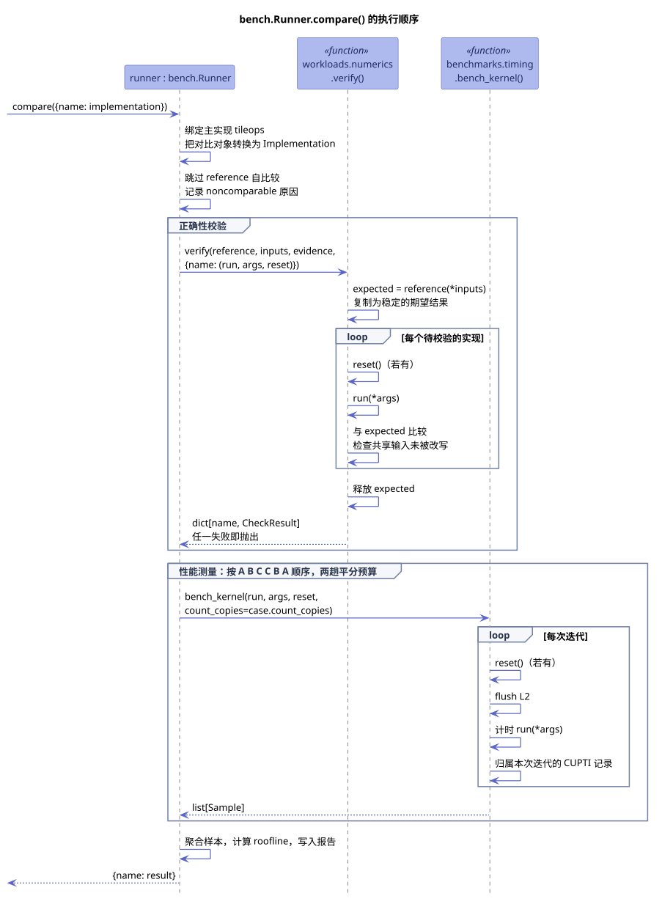
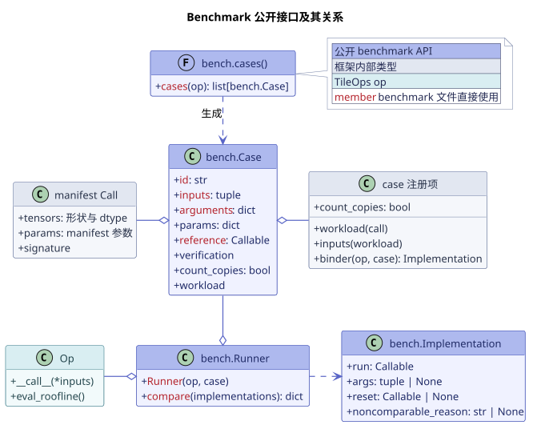

编写 benchmark¶
为 manifest 中的 op 编写 benchmark，核心是下面这一个调用：
其中：
op是 TileOps 的实现，在报告中记为tileops；case由bench.cases(Op)生成，对应 manifest 中的一次 workload 调用；implementations是与 TileOps 比较的其他实现。
compare() 会先按 workload 声明的规则校验每个实现，校验通过之后才开始计时，最后为每个实现在报告中写一行结果。这里涉及的四个公开接口都定义在 benchmarks/api.py 中：
| 接口 | 类型 | 作用 |
|---|---|---|
bench.cases(Op) |
函数 | 把 op 的 manifest workload 行展开为一组 bench.Case |
bench.Case |
类 | 记录一次 benchmark 的输入、op 构造参数、reference、数值校验规则和计时口径 |
bench.Runner |
类 | 校验、计时并记录 TileOps 实现与对比实现 |
bench.Implementation |
类 | 描述一个需要私有参数、需要恢复状态，或在数值上不可比的对比实现 |
写一个 benchmark 通常分三步：在 benchmarks/ops/ 中写测试函数，在 benchmarks/_cases/ 中为 op 注册 case，再决定与哪些实现比较。下面三节依次说明。
示例¶
下面以批量矩阵乘为例，把 TileOps 与 vLLM、SGLang 和 PyTorch/cuBLAS 放在一起比较：
import pytest
from benchmarks import api as bench
from tileops.ops import BmmFwdOp
@pytest.mark.parametrize("case", bench.cases(BmmFwdOp), ids=lambda case: case.id)
def test_bmm_bench(case, vllm_bmm, sglang_bmm):
op = BmmFwdOp(**case.arguments)
bench.Runner(op, case).compare(
{
"vllm": vllm_bmm,
"sglang": sglang_bmm,
"torch-cublas": case.reference,
}
)
这段代码中：
bench.cases(BmmFwdOp)为 manifest 中每个 workload 行的每个 dtype case 各生成一个 case，case.id同时用作 pytest 的用例 id。BmmFwdOp(**case.arguments)用 case 提供的构造参数创建 op。vllm_bmm与sglang_bmm是已经适配成与 op 相同输入签名的 callable，Runner会以case.inputs调用它们。- 映射中的键会原样写入报告。
tileops这个名字已经由 op 占用，不能再用作键；如果只传入一个实现而不是映射，它在报告中记为baseline。 case.reference以"torch-cublas"为名传入，因此它既负责生成期望结果，也作为一个对比实现参与计时。
benchmark 文件用 pytest 运行。加上 --tileops-verify 时只做校验、不计时，适合在改动 kernel 之后先确认数值：
python -m pytest benchmarks/ops/bench_bmm.py
python -m pytest benchmarks/ops/bench_bmm.py --tileops-verify
校验器的 bench 级会检查 benchmarks/ops/ 下的每个 benchmark 文件都调用了 bench.cases 与 bench.Runner。
注册 case¶
bench.cases() 需要知道如何把 manifest 中的一次调用变成 workload，这由 benchmarks/_cases/ 中的注册项提供。每个 manifest op 有一个注册项，按 family 放在对应的模块里。多数 op 的注册项只有一行，例如 _cases/gemm.py 中的：
Entry 的第一个参数由 manifest 调用构造 workload，其余参数只在需要时填写：
| 参数 | 默认 | 何时需要填写 |
|---|---|---|
inputs |
workload 的 gen_inputs() |
op 的运行时输入不是 gen_inputs() 生成的那一组，例如反向 op 需要先跑一遍前向 |
count_copies |
False |
op 依靠 run 内的 D2D copy 产出结果，例如原地 elementwise 与 MoE 的写回，见 benchmark 的计时方法 |
binder |
以 case.inputs 直接调用 op |
op 需要截取返回值、写入私有输出缓冲或恢复状态，例如 MoE 的 op 把结果写进预先分配的输出 |
count_copies 写在注册项里，所以同一个 case 的所有实现都按相同的口径计时。binder 决定 Runner 如何调用 op；无论是否自定义 binder，benchmark 文件传给 Runner 的都是原始的 op。新增 op 时如果漏了注册项，pytest 在收集用例时就会报错。
传入对比实现¶
大多数对比实现只读取输入，以 callable 的形式传入即可，Runner 会以 case.inputs 调用它，这等价于 bench.Implementation(run=callable)。
为了让比较公平，每个实现的每一轮执行都必须从内容相同的输入开始，所以任何实现都不能改写共享的 case.inputs；一旦发生改写，compare() 会在计时之前报错。有些库函数会原地写入某个参数，或者在多次调用之间保留状态，这时需要用 bench.Implementation 描述它。下面的 vendor_add 计算 x + y，但会把结果写回 y：
from benchmarks import api as bench
x, y = case.inputs
private_y = y.clone()
def vendor_add(x, y):
return y.add_(x)
def reset_vendor_inputs():
private_y.copy_(y)
vendor = bench.Implementation(
run=vendor_add,
args=(x, private_y),
reset=reset_vendor_inputs,
)
bench.Runner(op, case).compare({"vendor": vendor})
这个例子的要点是：
args按run的真实签名排列。args=None表示以case.inputs调用，args=()表示调用一个不接收参数的 closure，两者含义不同。- 会被改写的参数换成私有副本，并由
reset恢复；其余参数仍然可以直接使用case.inputs中的 tensor。这里只有y被改写，所以只复制了y。 reset在每次校验调用之前执行，也在每一轮计时的 L2 flush 之前执行，不计入读数，原因见计时。
数值上不可比的实现¶
有时外部实现的语义与 case 明确不同，但仍然希望记录它的性能。这时可以在实现上写明原因：
vendor = bench.Implementation(
run=vendor_fn,
noncomparable_reason="vendor uses different rounding semantics",
)
这个实现照常计时，但跳过数值校验，Runner 只检查它没有改写共享输入。报告保留这条原因，并且不计算它与 TileOps 的性能比值。原因不能为空，TileOps 实现也不能设置这个字段，这两种情况都会在计时之前报错。
数值误差超出容差属于校验失败，与语义不同是两回事，不能用这个字段绕过。
compare() 的执行过程¶

compare() 首先通过 binder 得到 TileOps 实现，并把每个对比对象转换为 bench.Implementation，然后依次进行正确性校验和计时，最后聚合样本、计算 roofline，并写入报告。
正确性校验¶
case.reference 在一次 compare() 中只执行一次，其结果作为期望结果。TileOps 实现与每个对比实现都和这同一份期望结果比较，实现之间不做两两比较：
每个实现执行之前先调用它的 reset，执行之后还会检查共享输入是否被改写。任何一个实现校验失败，都会抛出异常，这次比较不再进入计时。
比较的方式由 workload 的 verification() 声明，定义在 workloads/numerics.py 中。并不是每个 case 都能做数值比较，校验的结果会体现在报告上：
| 声明 | 校验方式 | 报告 |
|---|---|---|
Exact |
比较全部输出 | 正常记录，计算比值 |
Partial |
只比较前几个输出 | 注明哪些输出未校验，计算比值 |
Custom |
用 case 专用的断言函数比较 | 注明校验方式，计算比值 |
Unestablished、ReferenceInfeasible、Noncomparable |
不做数值比较 | 标为未校验，不计算比值 |
reference 本身运行时显存不足，也会让这个 case 的所有实现标为未校验。因此，一行有计时结果并不代表它的数值已经通过校验，读报告时以「未校验」标记和是否有比值为准。
以下两种对比实现不参与数值比较：
- 设置了
noncomparable_reason的实现，见数值上不可比的实现。 run正是case.reference、args为None且没有reset的实现。它与自己比较没有意义，校验状态沿用 TileOps 实现的结果。reference 的 wrapper、换了参数的调用或编译后的版本则算独立的实现，照常接受校验。
计时¶
计时由 benchmarks.timing.bench_kernel() 完成，校准、预热、L2 flush、采样与 CUPTI 记录都在其中处理。Runner 只负责安排各实现的先后顺序：按 A B C C B A 让每个实现各测两趟，两趟平分时间预算，原因见 benchmark 的计时方法。
校准、预热与采样的每一轮都按以下顺序执行：
这个顺序同时满足了三个要求：
- 每一轮都从内容相同的输入开始。
- 恢复状态的耗时不计入读数，因为
reset发起的 CUDA copy 不会归入这一轮的 CUPTI 记录。 - 恢复时写入的数据不会留在 L2 中。如果把
reset放进被计时的函数，它写入的输入会留在 L2 里，这个实现就获得了其他实现没有的缓存优势。
count_copies 只影响 run 内的 copy 是否计入读数；reset 始终位于计时区间之外，不受它影响。只想测量单个调用、不需要 case 与校验时，可以直接调用 bench_kernel，用法与各项读数的含义见 benchmark 的计时方法。
bench.Case¶
一个 bench.Case 完整描述了一次 benchmark：
| 属性 | 含义 |
|---|---|
id |
稳定的用例标识，用于 pytest 与报告 |
inputs |
按 op 签名排列的运行时输入 |
arguments |
构造 op 所需的关键字参数 |
params |
写入报告的各 tensor 形状、dtype 与 manifest 参数 |
reference |
生成期望结果的 callable |
verification |
workload 声明的数值校验方式，见正确性校验 |
count_copies |
run 内属于算子语义的 D2D copy 是否计入读数，来自注册项 |
workload |
生成 inputs 的 workload；对比实现需要 workload 派生的数据（例如注意力窗口、分块边界、预处理后的权重）时，可以从这里读取 |
case 的数据在首次访问时才创建，在测试结束后释放。因此 pytest 收集用例时不需要 GPU，而同一个 case 的校验与计时读取的是同一组 tensor，TileOps 实现、reference 与报告参数总是对应同一个用例。
各层的分工¶

benchmark 用到的信息分布在几个层次中，各层负责的内容如下：
| 层 | 负责的内容 |
|---|---|
| manifest | op 签名、副作用、模型 workload、roofline |
workload（workloads/） |
输入数据的分布、reference、数值校验方式 |
case 注册项（benchmarks/_cases/） |
由 workload 构造 case、case 的计时口径、TileOps 实现的调用方式 |
bench.Runner |
校验、计时顺序、roofline 计算与报告 |
测试（tests/） |
kernel 分支、边界条件与数值回归 |
benchmark 只读取 manifest 中的调用，不会为 benchmark 或某个实现向 manifest 增加字段。manifest workload 描述的是模型场景，用于持续追踪性能，并不负责覆盖 kernel 的各个分支；实现路径与边界条件的回归写在测试里，测试可以重用 workload 的数据与数值规则，但不经过 bench.cases()。
常见问题¶
对比实现会改写一个参数，能不能让 Runner 自动 clone 全部输入？
Runner 不会替实现 clone 输入。clone 无法保留输入之间的 alias 与 view 关系，也无法表示输入之外的状态。哪个参数会被改写，就由这个实现在 args 中传入它的私有副本，并在 reset 中恢复，写法见传入对比实现。
只有一个实现在 run 内做 D2D copy，能不能只为它计入 copy？
不能。count_copies 属于整个 case，写在注册项中。如果每个实现各自决定，同一张表里的实现就会按不同的口径计时，它们之间的比值也就失去了意义。
TileOps 的 op 需要包一层才能按 case.inputs 调用，能不能把 wrapper 传给 Runner？
不能。Runner 按 op 的类名在 manifest 中查找，并以这个名字写入报告，所以 wrapper 或子类会在构造 Runner 时报错。调用方式的适配应当写在该 op 注册项的 binder 中。